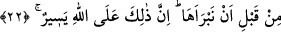

‘Bu yaratılma, senin amelinle mi benim rahmetimle mi oldu?’.
Kul ‘Yâ Rabbi rahmetinle oldu’ diyecek.
Allah buyuracak. ‘Sana beşyüz yıl ibâdet etme gücünü veren kimdir?’
Kul, ‘Ey Rabbim sen verdin’ diyecek.
Allah yine buyuracak: ‘Denizin ortasındaki bu tepeye seni yerleştiren ve tuzlu
suyun içinden tatlı akan bu pınarı, bu ağacın üzerinde her gün bu tatlı nar tanesini
yaratan kim? Sen ise yılda bir defa çıkıp, rûhunu secde hâlinde almamı diledin.
Bütün bunları senin için kim yaptı?’
Kul ‘Ey Rabbim sen yaptın.’ diyecek.
Allah Teâlâ, ‘İşte bütün bunlar benim rahmetimle gerçekleşmiştir ve seni
rahmetimle cennetime koyacağım.’ diyecek.”[271]
İbâdet için secdeye koyduğunda başını
Allah’ı senâ et görme kendini
Sadece Allah’ın keremindendir ümîdim
En büyük hatâdır amelime güvenmek
Hakk’ın yardımınadır bütün güvenim
Hakk’ın yardımındadır bütün ümîdim
22. Yeryüzünde vuku bulan ve sizin başınıza gelen herhangi bir musîbet yoktur ki,
biz onu yaratmadan önce, bir kitapta yazılmış olmasın. Şüphesiz bu, Allah’a göre
kolaydır.
“Yeryüzünde vuku bulan ve sizin başınıza gelen herhangi bir musîbet yoktur ki,”
Musîbet aslında atıcılıkta kullanılan bir kelimedir. Atılan ok doğruca hedefe ulaştığında,
“Ok isabet etti” denir. Sonra felâket ve sıkıntıya mahsûs olmak üzere kullanılmağa
başlandı. Yâni meyve ve ekinlerde meydana gelen kıtlık, kuraklık gibi yeryüzü
felâketlerinde; hastalık, âfet, çocuk ölümü, düşman korkusu ve açlık gibi insanın başına
gelen musîbetlerde kullanılmağa başlandı.
“Biz onu yaratmadan önce, bir kitapta yazılmış olmasın.” Yaratmadan önce bir
kitapta yazılı olmaktan maksad, nefisleri veya musîbetleri veyahut yeryüzünü
yaratmazdan önce Allah’ın ilminde veya Levh-i Mahfûz’da bunların yazılmış olmasıdır.
kelimesi sözlükte yaratmak,
yaratıcı demektir.
Râbî b. Sâlih Eslemî şöyle demiştir: Haccâc’ın öldürmek istediği Saîd b. Cübeyr
getirildiğinde yanına girdim. Adamlarından biri ağladı. Saîd, “Neden ağlıyorsun?” diye
sordu. “Başınıza gelen bu felâketten dolayı ağlıyorum” dedi.
Saîd: “Ağlama! Zira bu hâdisenin olacağı Allah’ın ilminde mevcuddu. Allah’ın şu